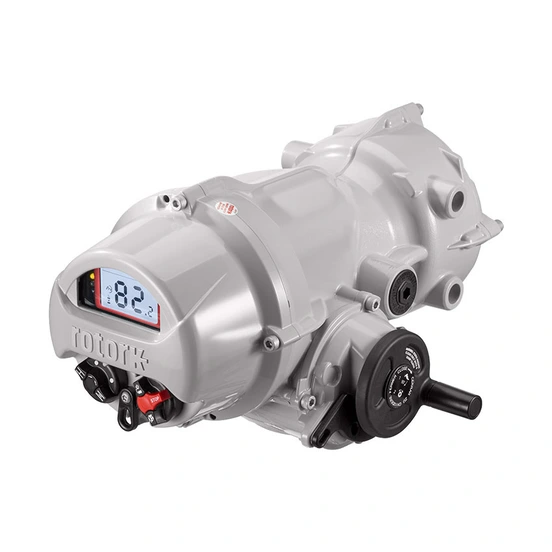

Khi cần báo giá hoặc thay thế actuator Rotork, việc đầu tiên không phải là tìm mã tương đương trên mạng mà là đọc đúng nameplate trên thiết bị. Nameplate chứa manufacturer, range/model, order code (part number) và serial number — bốn lớp dữ liệu dễ bị nhầm lẫn với nhau. Đọc sai một lớp có thể dẫn đến báo giá nhầm cấu hình, đặt nhầm điện áp hoặc chứng từ không khớp lô hàng. Bài này dành cho người mua hàng, kỹ sư QA/QC và bộ phận bảo trì cần chuẩn bị đúng thông tin trước khi liên hệ nhà cung cấp.

Trả lời nhanh
- Nameplate Rotork thường có 4 lớp thông tin: manufacturer/range, model, part number (order code) và serial number — không phải lớp nào cũng là "part number".
- Range hoặc model (ví dụ IQ3 Pro, MDL) không mặc nhiên là part number đặt hàng đầy đủ.
- Với dòng compact Hanbay M/R, nhãn còn ghi thêm điện áp cấp nguồn, firmware version, circuit board version và mã QR dẫn tới user manual.
- Nếu nameplate mờ hoặc thiếu trường dữ liệu, nên chụp ảnh gửi đối chiếu thay vì tự suy đoán cấu hình.
- Fast Group Engineering đối chiếu model/part number dựa trên ảnh nameplate và tài liệu kỹ thuật hiện hành trước khi báo giá.
Phạm vi: những dòng actuator nào áp dụng cách đọc này
Bài viết dùng hai nhóm sản phẩm thực tế trong danh mục Rotork để minh họa cách đọc nhãn:
- IQ3 Pro (multi-turn) và IQT3 Pro (part-turn) — actuator điện thông minh, có biến thể IQ3S Pro (1-pha), IQ3D Pro (DC), IQ3H Pro (tốc độ cao), IQ3M/ML Pro (modulating) và IQT3M Pro, IQT3F Pro.
- Hanbay M Range và Hanbay R Range — actuator compact cho van công nghiệp nhỏ, gồm các model MCJ/MCL/MCM/MCH/MCF (multi-turn) và MDL/MDM/MDH/MDF (1/4–3/4 turn), tương ứng bên R Range là RCx/RDx.
Cách phân lớp dữ liệu (range/model/part number/serial) áp dụng chung cho toàn bộ actuator Rotork; riêng cấu trúc order code minh họa trong bài là của IQ3 Pro Range và Hanbay M/R Range, không suy rộng nguyên trạng cho các range khác như CMA, Skilmatic SI.
Phân biệt range, model, part number và serial number
| Lớp dữ liệu | Là gì | Ví dụ | Lưu ý khi dùng làm từ khóa tra cứu |
|---|---|---|---|
| Range/family | Tên dòng sản phẩm, chưa xác định cấu hình | IQ3 Pro, Hanbay M Range | Không phải part number; dùng để định hướng tra cứu ban đầu |
| Model | Biến thể trong range, thường gắn với dải torque/tốc độ | IQT3 Pro, MDL, MCH | Vẫn có thể còn nhiều lựa chọn cấu hình chưa chốt |
| Part number / order code | Chuỗi đặt hàng đầy đủ, mã hóa các lựa chọn cấu hình | Chuỗi theo cấu trúc trên nhãn, ví dụ mẫu cấu trúc M Range: M-C-M-0-0-5-0-AB-0 | Chỉ gọi là part number khi lấy đúng nguyên bản từ nameplate/BOM/PO, không tự suy ra từ model |
| Serial number | Định danh một thiết bị cụ thể, gắn với đơn hàng/invoice | Số riêng theo từng máy | Không dùng làm từ khóa sản phẩm đại trà; che dữ liệu khách hàng khi chia sẻ công khai |
Nhãn thiết bị: trường dữ liệu cần tìm theo từng dòng
Bảng dưới tổng hợp các trường thường xuất hiện trên nhãn/nameplate của hai nhóm actuator, dựa trên tài liệu kỹ thuật chính thức. Cấu hình thực tế trên từng thiết bị vẫn phải đối chiếu bằng ảnh chụp trực tiếp.
| Dòng sản phẩm | Model tiêu biểu | Trường dữ liệu chính trên nhãn | Torque tham khảo (theo tài liệu) |
|---|---|---|---|
| IQ3 Pro (multi-turn) | IQ3 Pro, IQ3S Pro, IQ3D Pro, IQ3H Pro, IQ3M/ML Pro | Model code, torque output, điện áp/pha, chứng nhận vùng nguy hiểm, serial number | 14–3.000 Nm (bản 3-pha tiêu chuẩn) |
| IQT3 Pro (part-turn) | IQT3 Pro, IQT3M Pro, IQT3F Pro | Model code, torque output, duty cycle, điện áp/pha, chứng nhận | 125–3.000 Nm |
| Hanbay M Range | MCJ/MCL/MCM/MCH/MCF (multi-turn), MDL/MDM/MDH/MDF (1/4–3/4 turn) | Actuator series, part number đầy đủ theo product code, điện áp cấp nguồn, firmware version, circuit board version, serial number, mã QR user manual | MDx: 7,9–118 Nm tùy model |
| Hanbay R Range | RCJ/RCL/RCM/RCH/RCF, RDL/RDM/RDH/RDF | Tương tự M Range; ký hiệu enclosure HazLoc riêng cho R Range | RDx: 7,9–118 Nm tùy model |
Với riêng dòng Hanbay MDx, tài liệu hướng dẫn sử dụng mô tả rõ nhãn gồm: actuator series (M-Series/R-Series), điện áp cấp nguồn (12–24 VDC hoặc 110–240 VAC), actuator part number, firmware version, circuit board version, serial number và mã QR liên kết tới user manual tương ứng. Cấu trúc nhãn này áp dụng cho dòng MDx, không mặc nhiên đúng cho toàn bộ actuator Hanbay hoặc các range Rotork khác.
Quy trình đọc nameplate từng bước
- Xác định manufacturer/thương hiệu. Kiểm tra tên hãng in trên nhãn (Rotork hoặc thương hiệu con trong tập đoàn Rotork như Hanbay) để tránh nhầm với actuator OEM khác lắp trên cùng hệ van.
- Đọc range/family trước. Ghi lại tên range in lớn nhất trên nhãn (ví dụ IQ3 Pro, Hanbay M Range) — đây là điểm bắt đầu tra cứu, chưa phải part number.
- Ghi model code đầy đủ. Với Hanbay, model gồm 2–3 ký tự đầu của part number (ví dụ MDL, MCH); với IQ3 Pro/IQT3 Pro, model là tên biến thể in kèm range.
- Chép nguyên văn part number/order code, giữ đúng chữ hoa/thường, dấu gạch ngang. Không tự thêm hoặc bớt ký tự dù đoạn nào đó trông giống model quen thuộc.
- Ghi điện áp, tín hiệu điều khiển và chứng nhận nếu có in trên nhãn — đây là dữ liệu bắt buộc để báo giá đúng cấu hình.
- Ghi serial number riêng, không gộp chung với part number khi gửi yêu cầu báo giá.
- Chụp ảnh toàn cảnh actuator và ảnh cận nhãn rõ nét, gửi cả hai cho nhà cung cấp thay vì chỉ gõ lại bằng tay — giảm rủi ro đọc nhầm ký tự dễ lẫn (0/O, 1/I, 8/B).
Model và range liên quan
| Model/range | Lý do liên quan | Trang sản phẩm |
|---|---|---|
| IQ3 Pro | Actuator multi-turn phổ biến nhất trong dải điện thông minh, thường gặp nhất khi đọc nameplate thực tế | IQ3 Pro Rotork |
| IQT3 Pro | Phiên bản part-turn cùng nền tảng, dùng cho van bi/van bướm | IQT3 Pro cho van part-turn |
| CMA | Dòng điều khiển chính xác, có cấu trúc part number riêng, nên đọc bài phần 2 trước khi tự đối chiếu | CMA Rotork |
| Hanbay M Range | Actuator compact cho van nhỏ, ví dụ minh họa product code trong bài | Hanbay M Range |
| Hanbay R Range | Cùng cấu trúc product code với M Range, khác kiểu enclosure HazLoc | Hanbay R Range |
Mua actuator Rotork tại Việt Nam: bước tiếp theo sau khi đọc nameplate
Fast Group Engineering phân phối và cung cấp sản phẩm Rotork chính hãng tại Việt Nam. Sau khi nhận ảnh nameplate, đội ngũ kỹ thuật đối chiếu range, model, part number với catalogue/datasheet hiện hành trước khi lập báo giá, giúp giảm rủi ro đặt nhầm điện áp, tín hiệu hoặc mounting. Catalogue, datasheet, CO/CQ, packing list và hồ sơ liên quan được kiểm tra, xác nhận theo từng sản phẩm, cấu hình và lô hàng — không cam kết chung cho mọi đơn hàng.
Khách hàng không cần tự giải mã part number. Chỉ cần gửi ảnh nameplate rõ nét (toàn cảnh và cận cảnh), Fast Group Engineering sẽ phản hồi model, cấu hình đã xác định được và các trường dữ liệu còn thiếu cần bổ sung.
Câu hỏi thường gặp
Nameplate bị mờ, bong tróc hoặc không đọc được thì phải làm sao?
Chụp thêm ảnh toàn cảnh actuator, ảnh nhãn phụ (nếu có) và gửi kèm số PO/invoice hoặc catalogue đã đặt trước đó nếu còn lưu. Không tự suy đoán part number từ model tương tự, vì hai actuator cùng model vẫn có thể khác cấu hình.
Có thể báo giá chỉ dựa vào model, không cần part number đầy đủ không?
Có thể báo giá sơ bộ theo model/range, nhưng để chốt đúng cấu hình (torque, điện áp, tín hiệu, mounting, chứng nhận) cần part number đầy đủ hoặc các thông số cấu hình tương ứng. Báo giá theo model đơn thuần chỉ mang tính tham khảo ban đầu.
Serial number có phải là part number không?
Không. Serial number định danh một thiết bị cụ thể, gắn với đơn hàng/invoice của thiết bị đó. Part number (order code) mô tả cấu hình đặt hàng và có thể lặp lại ở nhiều thiết bị cùng cấu hình.
Vì sao hai actuator cùng model nhưng part number lại khác nhau?
Vì part number mã hóa thêm các lựa chọn cấu hình như điện áp, kiểu tín hiệu, mounting, bảng mạch điều khiển và tùy chọn cơ khí. Cùng một model (ví dụ MDL, MDM) có thể ra nhiều part number khác nhau tùy tổ hợp lựa chọn này.
Cần gửi thêm chứng từ gì ngoài ảnh nameplate để đối chiếu part number?
Nếu có, nên gửi kèm PO, packing list hoặc catalogue/datasheet của lô hàng trước đó. Các chứng từ này giúp đối chiếu chéo với nameplate, đặc biệt khi nhãn bị mờ một phần.
Gửi ảnh nameplate để được đối chiếu
Để kiểm tra đúng mã, vui lòng gửi ảnh nameplate rõ nét, part number hoặc BOM, số lượng, điện áp/tín hiệu điều khiển, loại van và điều kiện vận hành cho Fast Group Engineering qua Zalo/điện thoại (+84) 938 888 958 hoặc email minhduc@fastgroup.vn.
Nguồn tham khảo
- PUB002-407-00, IQ3 Pro Range Flyer, Issue 05/26 — trang 1 (tính năng, non-intrusive setup, data logger), trang 2 (model IQ3 Pro/IQT3 Pro và dải torque).
- PUB193-027, Hanbay M/R Ranges Brochure — trang 6–7 (specification và Product Code M Range), trang 8–9 (specification và Product Code R Range).
- PUB193-006-00, Hanbay MDx User Manual, Issue 04/24 — trang 13 (Part Number Breakdown), trang 14 (Label Breakdown); phạm vi áp dụng: dòng MDx, không suy rộng cho toàn bộ Hanbay M/R.
Ghi chú nội bộ: bài dựa trên brochure/flyer tổng quan. Trước khi chốt cấu hình cho một đơn hàng cụ thể, đối chiếu thêm datasheet/specification hiện hành tương ứng (ví dụ PUB002-197 cho IQ3 Pro chi tiết — tài liệu này chưa có trong thư viện PDF_REFERENCE, cần lấy bản mới nhất từ rotork.com trước khi dùng số liệu cụ thể).